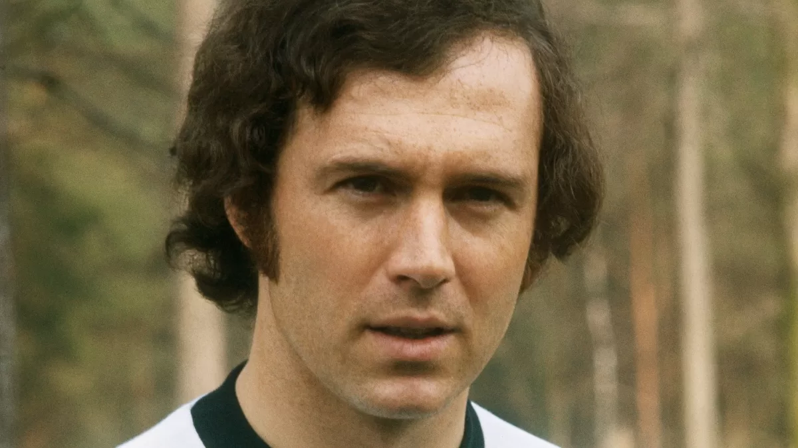

Munich, 1945) Futbolista alemán. Particularmente dotado como defensa libre y organizador del juego, obtuvo con su equipo, el Bayern de Munich, tres títulos europeos consecutivos, y la selección nacional de la RFA que él capitaneaba se proclamó ganadora de los Mundiales de 1974 (título que posteriormente revalidó como entrenador). Canalizador del juego de su equipo en la posición de líbero, también lo fue de incontables títulos nacionales e internacionales. Fue premiado con el Balón de Oro en 1972 y 1976. Apodado el Kaiser, se retiró de la competición en 1980 tras recibir una gravísima patada en los riñones. Su carrera deportiva continuó como directivo y entrenador. Franz Beckenbauer Franz Beckenbauer comenzó a practicar el fútbol en 1955 y ya en 1958, con sólo trece años de edad, pasó al equipo juvenil del Bayern, en cuya primera plantilla debutó en junio de 1964. Con el Bayern consiguió la victoria en cuatro campeonatos de la Liga (1969, 1972, 1973 y 1974) y en otras tantas Copas alemanas (1966, 1967, 1969 y 1971), y cosechó títulos europeos y mundiales: tres Copas de Europa consecutivas (1974, 1975 y 1976), la Recopa de 1967 y la Intercontinental de 1976. Durante su carrera fue proclamado en cuatro ocasiones mejor jugador alemán (1966, 1968, 1974 y 1976), y la revista France Football le concedió su premio al mejor jugador del continente (Balón de Oro) en los años 1972 y 1976. El Kaiser, como se le conoce en el mundo del fútbol, fue también una pieza fundamental de la selección alemana. Debutó en 1965 con la selección B frente a Holanda y, ya en septiembre de ese año, con el primer equipo alemán frente a Suecia. Su consagración internacional llegó con el Mundial de Inglaterra '66, en el que los alemanes se proclamaron subcampeones. En su segundo Mundial, en México '70, disputó cinco partidos; Beckenbauer fue baja en el partido por el tercer puesto, pero igualmente la selección alemana venció los uruguayos por la mínima (1-0). Desde 1971 Beckenbauer fue el capitán de la selección en sustitución de Wolfgang Overath, y poco después se inició el dominio alemán en la Eurocopa de Naciones. La selección consiguió la victoria en la de Bélgica '72, tras derrotar a los soviéticos en la final por 3-0, éxito que tuvo su continuidad con la consecución el 7 de julio de 1974 del entorchado mundial en Múnich al derrotar a los holandeses (2-1). En ese potente equipo se encontraban también Netzer, Muller, Breitner, Maier o Hoeness. En la Eurocopa de Naciones de 1976 la selección alemana llegó a la final, pero perdió ante los chechos en los penaltis. En febrero de 1977 jugó su último partido con la selección alemana frente a Francia, cerrando una trayectoria durante la que había vestido 103 veces la camiseta nacional y marcado 14 tantos. En 1977, cuando Warner Communications y otras empresas invirtieron millones en un intento de crear la Liga de fútbol norteamericana (NASL), Beckenbauer fue fichado por el Cosmos norteamericano por 2.800.000 dólares. En su primer año en el equipo neoyorkino coincidió con Pelé y Giorgio Chinaglia, y fue proclamado mejor jugador de la Liga. En esta primera etapa norteamericana se proclamó campeón de la competición nacional (Soccer Wowl) en 1977, 1978 y 1980.
En 1980 retornó a la competición alemana para jugar en el Hamburgo dos temporadas, pero en marzo de 1982 optó por su retirada en Europa, tributándosele un homenaje el 1 de junio entre su equipo y la selección nacional. A continuación, en 1983, volvió al fútbol norteamericano. En 1984 se hizo cargo como entrenador de la selección nacional alemana. Su primer reto fue el Mundial de México 1986, en el que Alemania disputó la final contra la selección de Argentina, a la que no logró vencer. En el Mundial de Italia 1990, nuevamente Alemania llegó a la final contra Argentina, alzándose esta vez con el título mundial sin perder ningún partido. Beckenbauer se convirtió así en el primer futbolista que ganaba un Mundial como jugador y entrenador. Después de rumorearse su posible incorporación al banquillo norteamericano de cara a los Mundiales de 1994, en el que eran los anfitriones, el 6 de septiembre de 1990 fichó por el Olympique de Marsella, de Bernard Tapie, propietario de Adidas, marca con la que ese verano había suscrito un contrato por diez años. Dirigió el equipo durante cinco meses, hasta que a finales de diciembre de 1990 fue sustituido por el belga Raymond Goethals. Beckenbauer permaneció en el Olympique de Marsella como director técnico hasta finalizar la temporada 90-91. Al igual que su compañero Karl-Heinz Rummenigge, en octubre de 1991 aceptó regresar a la entidad alemana a la que había dedicado gran parte de su carrera, primero como consejero del Bayern y desde noviembre como vicepresidente de la entidad bávara. Ante una importante crisis deportiva en su club, el 27 de diciembre de 1993 se hizo cargo del banquillo de forma temporal hasta junio siguiente. El equipo remontó posiciones y acabó ganando la Bundesliga 93-94. Como candidato único a presidir el Bayern, el 14 de noviembre de 1994 la asamblea lo eligió para el puesto para un mandato de tres años. De nuevo, el 29 de abril de 1996 volvió a sentarse en el banquillo del Bayern hasta finales de la temporada, meses en los que el equipo ganó la Copa de la UEFA. En noviembre de 1997 renovó mandato al frente del Bayern, en el que continuó como vicepresidente Rummenigge. Desde mediados de 1999 apoyó la candidatura de Alemania para organizar el Mundial de 2006, que resultó vencedora, y ocupó entonces la presidencia del Comité Organizador del Mundial. En abril de 2003, después convertir al club en sociedad de acciones, cedió la presidencia de la directiva a Rummenigge, mientras él mantuvo la presidencia del club, un cargo más representativo. En noviembre de ese año aceptó seguir un nuevo mandato en la presidencia del equipo bávaro, aunque gran parte de su tiempo lo dedicaba a la organización del Mundial. Como máximo responsable del Bayern, el equipo ha conseguido seis títulos de Liga (96-97, 98-99, 99-2000, 00-01, 02-03 y 04-05), así como la Liga de Campeones 2000-01, en la que había sido finalista en 98-99, y la Copa de la UEFA '96. En diciembre de 1993 fue elegido mejor entrenador y segundo mejor futbolista en la historia de la Copa del Mundo, en una votación en la que participaron más de mil periodistas deportivos. La Federación Internacional de Historia y Estadísticas del Fútbol le eligió en noviembre de 1998 mejor futbolista alemán del siglo, en enero de 1999 segundo mejor jugador europeo del siglo XX (por detrás de Cruyff), y en enero de 2000 le situó en tercer lugar de la lista de los mejores futbolistas del siglo XX, sólo superado por Pelé y Johan Cruyff.
